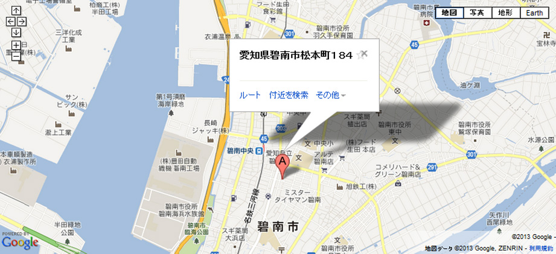
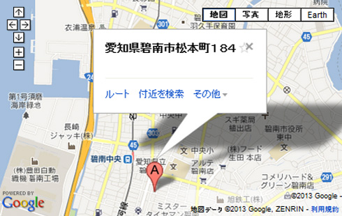

| 店舗名 | にぎり鮨 一五〇 （いちごいちえ） |
|---|---|
| 所在地 | 〒447-0878 愛知県碧南市松本町184 T.kappaビル2F |
| TEL | 0566-42-1150(お問い合わせの際はホームページを見たとお伝えください） |
| 営業時間 | 11時00～14時00 （最終入店受付時間 13時45） 17時00～21時00 （最終入店受付時間 20時30） |
| 定休日 | 月曜日 |
| アクセス | 碧南中央駅より歩いて8分 碧南中央駅から436m |
| クレジット カード |
不可 |
| 総席数 | 00席 |
| 駐車場 | 有 |

| 店舗名 | 鮨懐石みどり |
|---|---|
| 所在地 | 〒444-1324 愛知県高浜市碧海町2-3-9 |
| TEL | 0566-53-1234(お問い合わせの際はホームページを見たとお伝えください） |
| FAX | 0566-53-1334 |
| 営業時間 | [月?土] 11時00?15時00／17時00?22時00 [日] 11時00?15時00／17時00?21時00 ※オーダーストップは1時間前となります |
| 定休日 | 月曜日 |
| アクセス | 名鉄三河線高浜港駅から西へ徒歩7分 |
| クレジット カード |
VISA, MASTER, 他 |
| 総席数 | 183席 |
| 駐車場 | 50台 |

| 店舗名 | 和食居酒屋 花はな |
|---|---|
| TEL | 0566-46-3510ホームページを見たとお伝えいただくとスムーズです |
| 所在地 | 〒447-0878 愛知県碧南市松本町184 T.kappaビル1F |
| 営業時間 | 17：00～24：00（L.O.23：00） |
| 定休日 | 月曜日 |
| アクセス | 名鉄三河線碧南中央駅から徒歩5分 |
| クレジット カード |
|
| 総席数 | 106席（カウンター10席､テーブル12席､掘りごたつテーブル48席､カップルシート6席､大部屋掘りごたつテーブル20席､VIPルーム10席） |
| 駐車場 | 有 24台 |



にぎり鮨「一五〇（いちごいちえ）」
〒447-0878 愛知県碧南市松本町184 T.kappaビル2F（地図）
TEL.0566-42-1150（お電話の際は「ホームページを見た」とお伝えくださるとスムーズです）
営業時間：11：00～14：00/17：00～21：00 / 定休日：月曜日